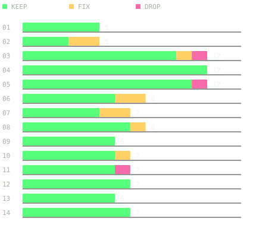

FL-TR-2026-01PRELIMINARY REPORT
01 / SOFTWARE ENGINEERING
Software Factory Technical Report
Software development with an unattended agent loop.
We ran 14 coding agents overnight on our production codebase. They wrote 132 commits; 110 survived review and initial integration.
The run, the review decisions, the costs, and what shipped.

Original review verdicts · one bar per lane
- FACTORY COMMITS
- 132 → 110
- TOKENS PROCESSED
- 848M
- RECORDED COST
- ≈$493
written → initially integrated
including cached reads
list-price accounting snapshot
Paper / harness / sanitized data / figuresReport details →